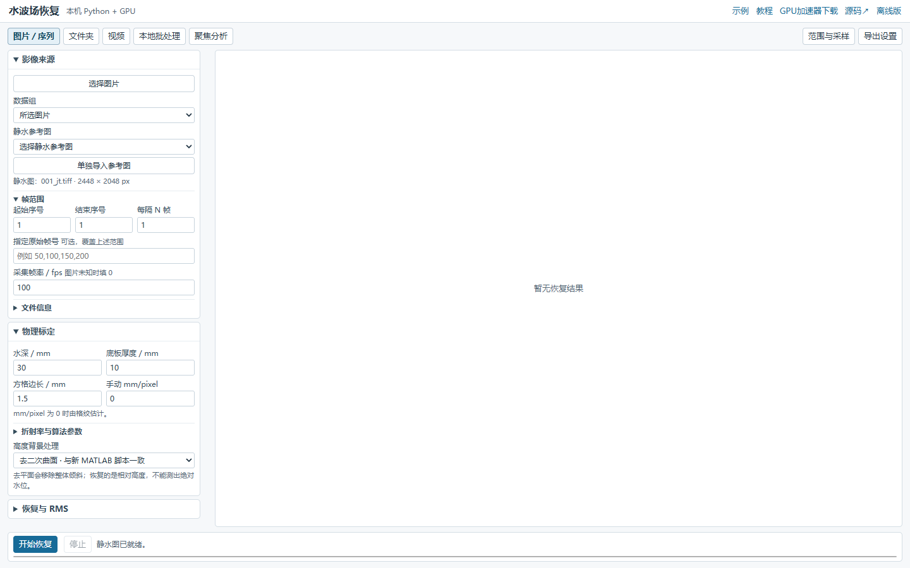
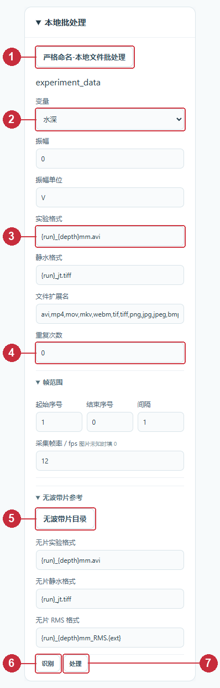
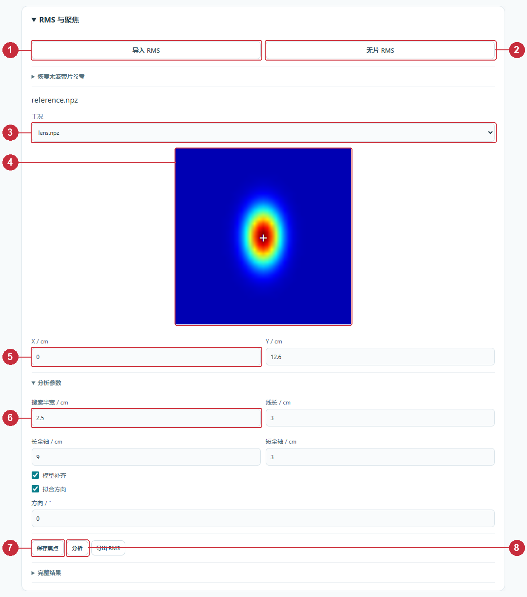

水波场恢复使用教程
用静水棋盘格作参考，从实验影像恢复水面高度，再按需要计算 RMS、焦斑宽度和聚焦增益。
- 在工作台顶部选择任务，导入实验影像和静水参考图。
- 在左侧核对帧率、水深和棋盘格边长。只处理部分画面时，打开范围与采样。
- 点导出设置选择所需结果，再点底部开始恢复。结果显示在右侧，下载和进度在底部。
首次操作可用“示例”熟悉界面；正式计算前应重新核对实际采集参数。
图片与序列
- 选择图片／序列 → 选择图片。单张、多张都可；序列按文件名中的数字排序。
- 在“静水参考图”下拉框确认参考图，或用单独导入参考图。被选为参考的文件不会当作实验帧处理。
- 按需设置起止序号、间隔或指定帧号。时间分析使用实际采集帧率，不是导出视频的播放帧率。

通用文件夹
选择文件夹，子目录中的图片自动分组，视频各为一组。每次仅处理“数据组”中当前选中的组；多场次自动处理请用本地批处理。遇到多个静水候选时手动确认，不要把实验帧指定为静水图。
视频与抽帧
选择视频 → 选择视频，确认解码显示的帧数与帧率。恢复高度还需导入同机位、同尺寸的静水参考；如果只需要原图，设好帧范围后直接点提取 TIFF，不用参考图。ZIP 保留原始帧号及时间记录；TIFF 编码不会新增有损压缩，但不能逆转源视频已有的压缩。
AVI 支持取决于视频编码，必要时使用独立版或 GPU 加速器提供的本机解码。仅修改扩展名不能解决编码问题。
处理范围
未选时处理整图。在范围与采样里拖拽矩形，或输入起点和宽高。坐标以原图左上角为零，X 向右、Y 向下；边缘裁剪会从矩形四边再去掉指定像素。虚线框内才是最终有效范围，采样线和点也要放在里面。

剖面与采样点
可在同一弹窗画自由线、水平线、竖直线或采样点，也可输入坐标。剖面线用于沿程高度和空间谱；点用于高度时间序列和点频谱。导出频谱或 Hilbert 振幅／相位时，需要有效帧率及至少三帧等间隔数据。
复用设置
在范围与采样 → 导出记录保存 JSON，同样尺寸和机位的数据可通过“导入记录”复用选区、采样和设置。更换机位、裁剪或标定后应重新核对，不能仅凭图像尺寸相同就套用旧记录。
标定
至少核对水深、亚克力厚度、棋盘格边长和帧率。若没有独立的像素尺度，保留自动标定；有独立测量时可填实际 mm/px。经验系数适用于对应装置，不应直接用于另一套光路。

RMS 与锁相
普通 RMS 按每个位置的有效帧计算 Z = √mean(h²)，不会再扣一次时间均值；默认有效帧比例为 80%。锁相用于已知激励频率：输入实际频率，选取覆盖多个周期的帧，并确保帧率正确。灰区或 NaN 表示无效测量，不应当作零波高。
本地批处理
- 选择本地批处理，授权实验目录读写。按文件名选变化量，并在“命名规则”填写模板。例如
{run}_{depth}mm_short.avi对应001_30mm_short.avi；静水模板可填{run}_jt.tiff。 - 设定重复次数和帧范围。重复次数填 0 表示使用全部匹配项。需要配对无片场时再展开对应选项。
- 点识别，在任务预检核对逐次文件、参考和共享选区；有多个静水候选时为该次选定一个。确认后点处理，结果写入实验目录的
results。 - 恢复完成后可打开“聚焦分析”，单独分析当前场或生成批量汇总。已保存中间结果的任务可用“继续”。

不要混淆两类参考
- 静水参考图
- 没有水波的棋盘格照片，用于恢复高度；每组原始影像都需要，常见名称是
jt.tiff。 - 无波带片动态参考
- 移除波带片但保留相同激励后的波场，用作增益分母。可导入无片 RMS，也可从无片影像和其静水图恢复。与有片场保持相同的机位、标定、水深、频率和处理范围。
聚焦分析
- 切到聚焦分析，选已恢复的工况，或导入 RMS（可多选 MAT／NPZ）。计算增益时再导入无片 RMS。
- 点选取焦点，在 RMS 图上点击主峰附近，或输入 X/Y 后确认焦点；点底部分析。批量可复用已确认的焦点，并为未选点工况启用走廊自动找峰。
- 默认固定椭圆的完整轴长为 9 × 3 cm，方向由拟合决定。可修改两轴，也可勾选另算半高宽椭圆增益；两种结果互不替代。需要功率剖面、拟合诊断图和数据时，在导出设置中勾选完整聚焦分析。
半高宽（FWHM）是 RMS 剖面左右两个半峰交点的距离，阈值取背景与峰值之间的中点。缺少实测交点时以拟合模型估计并标记来源。聚焦增益是有片与无片在相同线段或区域内的 Z² 积分比，不是绝对功率；应同时检查有效覆盖率和模型补齐比例。

结果文件
| 需要什么 | 选什么 |
|---|---|
| 定量处理单帧／序列 | 高度 NPZ／CSV，或高度场 MAT：H_single.mat / H_all.mat。高度为 mm；MAT 坐标为 cm。 |
| 重新导入聚焦 | RMS NPZ 或 MAT；包含 Z、dZ、坐标和有效掩膜。 |
| 比较积分与诊断主峰 | 线、固定椭圆或半高宽增益；完整分析另导出 RMS 与功率图、剖面、不确定度、拟合诊断和包围能量。 |
| 批量比较 | focal-repeats.csv 记录逐次值，focal-conditions.csv 区分重复统计与平均场上的指标。 |

离线与 GPU 加速
不确定显卡是否符合要求，或需要断网后首次启动：选标准离线版。完整解压后运行启动器，无需安装 Python 或联网。
Windows／Linux x64 且有兼容的 NVIDIA 显卡：可选含 GPU 加速器的离线套装，或单独下载 GPU 加速器。建议使用 Turing（计算能力 7.5，如 RTX 20 / GTX 16）或更新架构、R580 或更新驱动及 Python 3.11+。GPU 加速器首次启动需要联网安装依赖，不修改显卡驱动；配置失败仍可在 CPU 上处理。
解压后运行 launch-water-wave.bat / launch-water-wave.command。工作台顶栏显示“本机 Python + GPU”表示已经启用；只显示本机 Python 则使用 CPU。新版加速器可直接导入不超过 1 GiB 的单个 RMS 文件。
故障排查
- 不能开始恢复：检查静水参考和实验帧是否都已读取，且不属于不同机位或尺寸。
- 无法找载波或无效像素太多：检查格纹、曝光、遮挡和选区，不要使用伪彩图作输入。
- 有焦斑但没有增益：检查无片动态参考、网格重叠和参考积分是否非零。
- 内存不足：缩小选区、增加采样间隔，或关闭完整高度栈和非必要的逐帧导出。